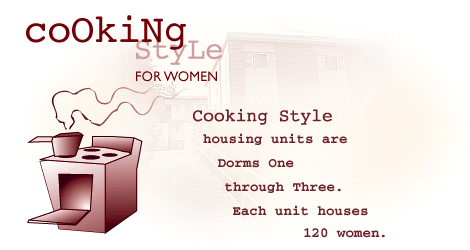

On-Campus Women's Cooking-Style Housing
| The Ricks College Women's Cooking-style housing units are Dorms One through Four (dorms 1-3 in the summer) . Each one houses 120 women. | |
 |
This is what the main lounge looks like: |
 |
Each apartment houses four women. Bedrooms have two beds, two dressers, an eight-foot
closet, one desk, and some wall-mounted shelving.
The newly remodeled bathroom has a tub/shower and toilet, which has a cabinet-mounted sink and a large four-door medicine cabinet. |
 |
Each apartment also has a newly remodeled bright-white kitchen with microwave, dishwasher, refrigerator-freezer, and a telephone with free local calls. |
 |
There is also a coin-operated laundry room in each building with Maytag® washers and dryers. |
By the way, you can live in cooking-style housing and still eat in the
Galley
(the on-campus cafeteria).
For information, please visit the
Ricks
College Food Services
website.
If you would like to apply to live in the cooking-style dorms for women,
please visit our Application Page
Men's Cafeteria Style | Women's Cafeteria Style
On Campus Housing | Housing Home Page